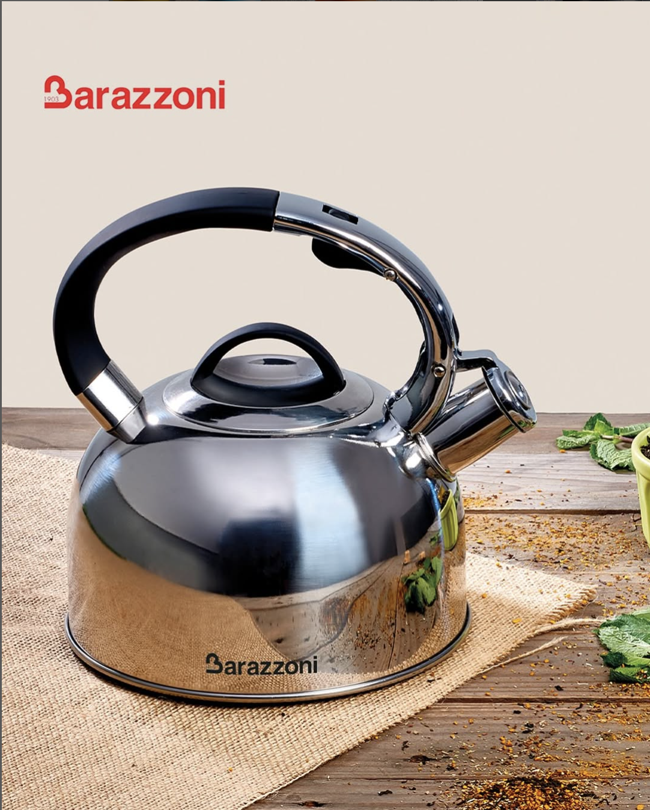

| 1101 |
Evfemiya |
|
Farfor |
Qarışıq |
Zərif naxışları və klassik çalarları ilə Evfemiya qəhvə fincanı, ənənəvi üslubu müasir görünüşlə birləşdirir. Dərin mavi ornamentləri və qızılı tutacağı ilə hər qurtum qəhvəni xüsusi bir an halına gətirir.
Dəstə daxildir:
- 2 ədəd qəhvə fincanı
- 2 ədəd nəlbəki |
| 1102 |
Crystal Bohemia |
 |
Xrustal |
Şəffaf |
Zəriflik, keyfiyyət və klassika bir arada…
Çexiya istehsalı bu xrustal stəkanlar, süfrənizə həm parıltı, həm də incə zövq qatacaq. Sadə, lakin şık dizaynı ilə həm gündəlik istifadə həmdə xüsusi günlərdə üçün mükəmməl seçimdir.
Kristalın özünəməxsus parıltısını uzun müddət qoruyur, zaman keçdikcə əsl gözəlliyini saxlayır. |
| 1103 |
Barazzoni |
 |
Paslanmayan Polad |
Metalik |
İtalyan istehsalı olan Barazzoni Parlaq Səthli Düdüklü Çaydan, klassik dizaynı və funksional xüsusiyyətləri ilə mətbəxinizə zəriflik qatır.
Əsas Xüsusiyyətlər:
- Material: Yüksək keyfiyyətli 18/10 paslanmayan polad
- Tutum: 2,5 litr
- Dizayn: Parlaq səthli, klassik görünüşlü
- Uyğunluq: İnduksiya, qaz, elektrik və keramika ocaqlarda istifadə üçün uyğundur
- Əlavə Xüsusiyyətlər:n Qapağa inteqrasiya olunmuş düdük və asan açılan tökmə ağızlığı |